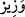
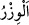
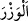
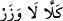
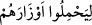
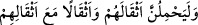
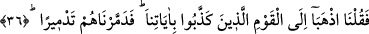

isimdir. “__WORD__ ise yardımcı demektir. el-Kâmûs’ta der ki: “__WORD__ ağırlık, ağır yük
demektir. Vezîr ise sultanın yükünü omuzlayan ve görüşleriyle ona yardım eden sultanın
sırdaşıdır. Bazıları ise kendisine mürâcaat edilen ve görüşüne sığınılan vezirin, dağda
kendisine sığınılan ve korunulan yer anlamındaki “__WORD__ kökünden geldiğini söylemiştir.
Nitekim “__WORD__ (Kıyâmet gününde) sığınılacak bir yer yoktur.” (el-Kıyâme, 75/11)
buyrulmuştur. Ağırlık anlamında “__WORD__, dağın ağırlığına benzetilmiştir. Bu kelimeyle
ağırlık ifâde edildiği günah da ifâde edilir. Nitekim âyette “
kendi
günahlarını taşımaları…” (en-Nahl, 16/25) ve “
elbette
kendi yüklerini (veballerini), kendi yükleriyle birlikte nice yükleri taşıyacaklar” (el-
Ankebût, 29/13) buyrulmuştur.
Eğer “Hârûn’un Mûsâ’nın vezîri olması, peygamberlikte ortak olmasına ters gibidir.
Çünkü ona ortak olduğu zaman vezir olmaktan çıkar.” dersen, şöyle cevap veririm:
“Vezîr olması, peygamberlikte ortak olmasına ters değildir. Çünkü bir konuda ortak olan
iki kimse o husûsda birbirlerinin yardımcıları, vezirleridirler.
36. “Âyetlerimizi yalan sayan kavme gidin” dedik. Sonunda, (yola
gelmediklerinden) onları yerle bir ediverdik.”
O zaman ikisine: “Âyetlerimizi yalan sayan kavme” Fir’avn ve kavmi olan
Kıptîler’e “gidin” dedik.”
“Âyetler” Mûsa (a.s.)’ın elinde zâhir olan dokuz ayrı mûcizedir. Fir’avn ve kavmi,
Mûsa ve Hârun kendilerine peygamber olarak gönderildiğinde “âyetleri yalan sayan
kavim” olarak vasfedilmemiştir. Çünkü onların âyetleri yalanlaması, onların ızhâr
edilmesinden sonradır. Âyetlerin ızhâr edilmesi, Mûsâ ve Hârun (a.s.)’ın gitmesinden
sonra, onların gitmesi de bunun kendilerine emredilmesinden sonradır. Aslında onlar
Rasûlullah (s.a.)’e hikâyeleri aktarılırken daha sonra anlatılacak olan yerle bir edilme
sebeplerini açıklamak için “âyetleri yalan sayan kavim” olarak vasfedildiler.
“Âyetler”den maksadın tekvînî âyetler, yâni Allah’ın dünyada yarattığı alâmetler olduğu
da söylenir. Ya da “Nuh kavmine gelince, peygamberleri yalancılıkla itham
ettiklerinde…” âyetinde olduğu gibi “âyetler”in Mûsâ (a.s.)’dan önceki peygamberler
ve peygamberlere verilen kitaplar olduğu da söylenir.
Fir’avn ve kavminin yalan sayması, “âyetlerimize haksızlık ettiler” (el-A‘râf,
7/103), “Andolsun biz ona (Firavun’a) bütün (bu) âyetlerimizi gösterdik.” (Tâhâ,
20/56) âyetlerinde olduğu gibi bazen âyetlerle ilgilidir; “Böylece onları yalanladılar”
(el-Mü’minûn, 23/48) âyetinde olduğu gibi bazen de Mûsâ ve Hârun (a.s.) ile ilgilidir.